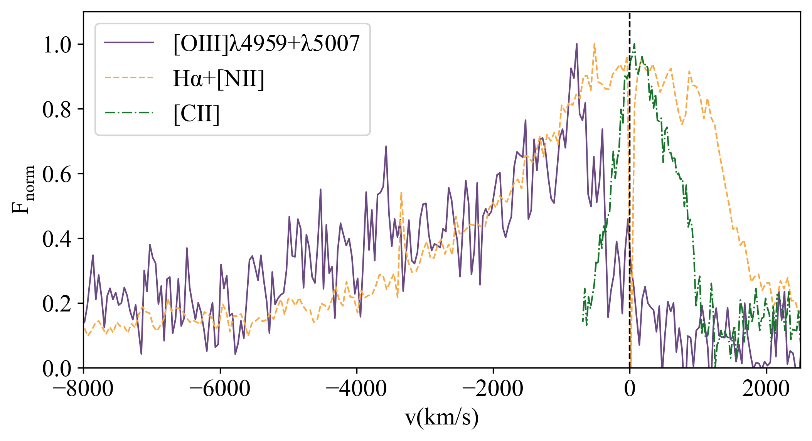

Distant quasars (QSOs) are considered key actors in the evolution of the early Universe. High-redshift merging systems,
containing two or more supermassive black holes (BH) surrounded by close companions, tidal bridges, and tails on
kiloparsec scales, represent an expected phenomenon, as evidenced by the first spatially resolved spectroscopic
observations from the James Webb Space Telescope (JWST). The study of these systems provides crucial insights for
constraining key components of galaxy evolution models, enhancing our understanding of galaxy growth and the feedback
effects of active galactic nuclei (AGN) throughout the history of the Universe.
In this work, we present the QSO in the merging system BR1202-0725: one of the best laboratories at z~4.7. The quasar
is located about 24 kpc from a submillimetre galaxy with evidence of heavily dusty BH at its center and a powerful outflow
expelling ~5 × 10⁶ M⊙ of ionized gas at ~5000 km/s, comparable to outflows in luminous QSOs. Thus, they form one of the most
distant close pairs of AGN known so far. Additionally, this merger is one of the most overdense fields known in the early
universe formed also by the three Lyα emitters and four companion galaxies. Using JWST observations, we estimated the
BH properties and characterized the interstellar medium of the system. Our goal is to investigate the physical conditions
and ionizing mechanisms, as well as to assess the impact of dual black holes driving outflows at high redshift.

Left panel: JWST NIRSpec IFU Hα image of BR1202-0725. Dust continuum emission from ALMA in Band 7 is shown as black
contours. Star symbols illustrate the position of the two Lyman-α emitters in the FoV.
North is up, east is left. A logarithmic color scale is used.
Right panel: Comparison of the SMG line profiles of the [OIII], Hα+[NII], and [CII] emission lines in velocity space.
All line profiles are normalized to their peak value. The vertical black dotted line indicates the zero velocity at
the systemic redshift of z = 4.6891.
20) GA-NIFS: Mapping z≃3.5 AGN-driven ionized outflows in the COSMOS field, Bertola et al. (2025)
ADS link
A key phase of galaxy evolution is the rapid transition (< 2Gyr) from early galaxy assembly at ‘cosmic dawn’
(i.e., z>6) to the so-called ‘cosmic noon’ (z~1-3), where the cosmic density of both star formation rate (SFR) and
SMBH accretion rate peak. Galaxy growth is thus closely tied to AGN activity, yet little is known about the impact
of AGN feedback beyond z~3, especially in the ionized gas phase.
The GA-NIFS JWST/NIRSpec GTO program includes the largest sample of AGN at z~3-6 with available rest-frame
optical spatially-resolved spectroscopy collected with JWST/NIRSpec/IFU (Perna+25b).
In this paper, we presented our study to characterize AGN outflows in such a sample of z~3-6 AGN selected from COSMOS to have log($L_{\rm X}$/erg/s)>44. We mapped the ionized emission of AGN (Halpha, [OIII], Hbeta, …) at sub-kpc scales and spectrally isolated the broad components tracing outflows from the gas at rest with the galaxy. We derived outflow properties from spatially-resolved and integrated spectra (e.g., velocity, outflow mass rate) and compared them with those of the galaxy and of the AGN, retrieved from dedicated SED fitting. We compared our results with literature AGN from the local Universe to earlier cosmic epochs, spanning a very broad range of AGN luminosity.
To account for the very different assumptions regarding the outflow density, we made the choice of comparing our results with the literature by parameterizing this parameter while homogenizing the various collected measurements.
We find that outflows observed in COS-AGNi are well consistent with the previous results in the
\(\dot{M}_{\rm out}\) versus
\(L_{\rm bol}\),
\(\dot{E}_{\rm out}\) versus
\(L_{\rm bol}\), and
\(v_{\rm max}\) versus
\(L_{\rm bol}\) parameter spaces and that they mostly fall close to or above previous scaling relations (Fiore+17, Bischetti+19b, Musiimenta+23). Lastly, we find no clear redshift evolution of
\(\dot{M}_{\rm out} n_{\rm e} / L_{\rm bol}\) and
\(\dot{E}_{\rm out} n_{\rm e} / L_{\rm bol}\) beyond
\(z > 1\).
In general, the trends shown by GA-NIFS AGNi at z>3 are similar to those observed at lower redshifts, suggesting that the nature of AGN feedback does not significantly evolve beyond z=3.
17) GA-NIFS: A high number of dual AGN at z~3, Perna et al. (2025b)
ADS link
Galaxy mergers can drive gas onto central supermassive black holes (SMBHs), forming dual active galactic nuclei (AGN).
The fraction of AGN pairs provides key insights into galaxy interactions, SMBH growth, and co-evolution with
their hosts. However, identifying dual AGN remains challenging due to the need for high-quality spatial and
spectral data, with only a few detected at high redshifts. We estimate the fraction of dual AGN at 2 <z < 6
by analysing 16 AGN observed with JWST/NIRSpec in integral field mode as part of the GA-NIFS survey.
For two targets, we include archival VLT/MUSE data to extend the search area. We identify companion galaxies and
emission-line sources within the ∼20×20 kpc NIRSpec field of view, extending to ∼50 kpc with MUSE.
Their spectra are analysed to determine physical and kinematic properties. We report the serendipitous discovery
of a triple AGN and four dual AGN, with projected separations of 3–28 kpc. This more than doubles the number of
known multiple AGN at z > 3 within these separations. The estimated fraction of multiple AGN (∼20–30%)
exceeds previous observational constraints and moderately surpasses predictions from cosmological simulations (∼10%).
These results demonstrate NIRSpec’s exceptional ability to detect distant dual AGN and motivate further studies to
refine their occurrence across cosmic time.
[OIII] map (top-left) and integrated spectra of the dual AGN system associated with COS1638.
16) GA-NIFS: Multi-phase analysis of a star-forming galaxy at z∼5.5, Parlanti et al. (2025)
ADS link
Outflows play a crucial role in galaxy evolution, shaping the galaxy mass function at the high and low mass end
by expelling and heating the gas in the galaxy and suppressing star formation. Low-z studies suggest that
outflows are multiphase, and now, for the first time with the advent of JWST we can observe the rest-frame
optical emission line from high redshift galaxies, expand our search for ionized outflows up to the early Universe.
In this work, we analyze the JWST NIRSpec/IFU data of HZ4, a main sequence, star-forming galaxy at z=5.5,
which is the highest redshift star forming galaxy with a neutral outflow traced by the broad [CII] emission.
These data, together with the ALMA observations allow us to characterize the properties of the different phases
of the ISM. In particular we find the presence of an ionized outflow identified as a broad component in the [OIII]
and Hα emission lines. The outflow is launched by a region hosting a burst of star formation, with the mass
outflow rate of the ionized phase being smaller than the neutral one. These two phases are expelling from the
star forming region the same amount of gas that is converted into stars. This dataset allows us to study for the
first time the properties multiphase properties of a star-formation driven outflow at z~5.5.
Top left and central panels: flux and velocity of the [OIII] narrow component.
Bottom left and central panels: Flux and velocity of the outflow component, green contours show the narrow [OIII] flux.
Right panel: Comparison between the ionized and neutral mass outflow rate color-coded by redshift.
The pink star marks the measurements for HZ4 from this work. The turquoise circles are the local ULIRGs,
the triangle, pentagon, diamond, and square display the results obtained for local and high-z AGN.
The black dashed line represents the 1:1 relation
15) GA-NIFS: A galaxy-wide outflow in a Compton-thick mini-BAL quasar at z = 3.5 probed in emission and absorption, Perna et al. (2025a)
ADS link
In this paper, we examine GS133, a Compton-thick quasar at z=3.5, utilising JWST NIRSpec integral field spectroscopy (IFS) and
archival Very Large Telescope (VLT) data with integration times of 1 hour and 40 hours, respectively.
Our optical emission-line analysis reveals a rotating disk accompanied by a galaxy-wide bi-conical outflow exhibiting
velocities up to 1000 km/s. Additionally, ultraviolet absorption features disclose high-velocity outflow components reaching -1900 km/s,
indicative of a mini-broad absorption line (mini-BAL) system.
Through photoionisation and kinematic modelling, we infer partial mixing of emitting and absorbing gas clouds within the outflow
on kiloparsec scales. The inferred outflow mass-loading factor and kinetic coupling efficiency indicate significant AGN feedback on galactic scales.
These results demonstrate the complex interplay between AGN activity, star formation, and the ISM, emphasising the transformative
capabilities of JWST for exploring feedback in high-redshift galaxies.
Left panels: MOKA3D model of the outflow in GS133. Right panels: moment maps from NIRSpec data and from the MOKA3D model.
14) GA-NIFS: JWST/NIRSpec IFS view of the z~3.5 galaxy GS5001 and its close environment at the core of a large-scale overdensity, Lamperti et al. (2024)
ADS link
In this paper, we present JWST/NIRSpec IFS observations of the galaxy GS5001 at redshift z = 3.47, the central member
of a candidate protocluster in the GOODS-S field. We analysed the spatially resolved ionised gas kinematics and interstellar
medium properties, including obscuration, gas metallicity, excitation, ionisation parameter, and electron density. In addition
to the main galaxy (GS5001), the NIRSpec FoV covers a close companion in the south, with three sub-structures, and another source in the north.
Optical line ratio diagnostics indicate star formation ionisation and electron densities of ∼500 cm$^{-3}$ across all sources in the FoV.
We find higher gas-phase metallicity in the main galaxy is 12+log(O/H) = 8.45 ± 0.04, than in the companions (12+log(O/H) = 8.34 ‑ 8.42),
consistent with the mass-metallicity relation at z ∼ 3. We find peculiar line ratios (high [N II]/Hα and low [O III]/Hβ )
in the northern part of GS5001. These could be attributed to either higher metallicity, or to shocks resulting from the interaction
of the main galaxy with the northern source. Moreover, we identify a spatially resolved outflow in the main galaxy,
with an extension of about 3 kpc, maximum outflow velocities of ∼400 km/s, a mass outflow rate of 23 ± 5 M⊙/yr,
and a mass loading factor of 0.23. These properties are compatible with star formation being the driver of the outflow.
Our analysis of these JWST NIRSpec IFS data therefore provides valuable, unprecedented insights into the interplay between
star formation, galactic outflows, and interactions in the core of a z ∼ 3.5 candidate protocluster.

Identification of galaxies and structures around GS5001. Left: NIRCam three-color
image of GS5001. Middle: HST/ACS F775W band image with contours of the NIRSpec [OIII] emission in red.
Right: NIRSpec [OIII] flux map with contours of the HST/ACS F775W emission in black. Blue and green regions mark the
different components identified in the [OIII] map.
13) GA-NIFS: An extremely nitrogen-loud and chemically stratified galaxy at z∼5.55, Ji et al. (2024)
ADS link
Recent JWST observations revealed several galaxies with extreme nitrogen enhancements in the early Universe, whose
enrichment mechanisms remain debated. In this work, we present the chemical abundance pattern of GS_3073, a galaxy at z=5.55
hosting an ​``overmassive'' active black hole, by leveraging the detection of about 40 emission lines from JWST/NIRSpec IFU
observations and ground-based (VLT/VIMOS) data. By using rest-frame UV emission lines, which trace high-density
($\sim 10^5~{\rm cm}^{-3}$) and highly ionized gas, we derive an abundance ratio of $\rm log(N/O) = 0.46^{+0.12}_{-0.09}$.
At an estimated metallicity of $0.2~Z_{\odot}$, this is the most extreme nitrogen-rich galaxy found by JWST thus far.
In comparison, the relative carbon abundance of GS_3073 is not significantly higher than those in local galaxies and stars
with similar metallicities. We also find evidence of Fe enrichment in GS_3073. Overall, the chemical abundance pattern of
GS_3073 is compatible with enrichment by super-massive stars, ejecta from asymptotic giant branch (AGB) stars, or winds
from Wolf-Rayet (WR) stars. Interestingly, when using optical emission lines which trace low-density and low-ionization gas,
we find a sub-solar N/O ratio, consistent with local galaxies at the same metallicity.
We interpret the difference in N/O derived from UV lines and optical lines as evidence for a stratified system, where the
inner and denser region is both more chemically enriched and more ionized. Taking this luminous, well-studied system as a
benchmark, our results suggest that nitrogen enhancement in high-$z$ galaxies is confined to the central, dense, and highly
ionized regions, while the bulk of the galaxy evolves more normally.
Relation between N/O and O/H measured from different systems. We used open symbols to represent all $z\sim 0$
sources except the nitrogen-loud galaxy Mrk 996. The colored symbols represent nitrogen-loud galaxies confirmed
by JWST/NIRSpec observations. The red pentagon represents the fiducial abundances we estimated for GS_3073,
where N/O is estimated from rest-frame UV emission lines originating in a high-density region.
The red square corresponds to the fiducial abundances we estimated based on rest-frame optical emission lines,
which likely originate in a low-density region. The significantly different N/O ratios of the high-density region
and the low-density region indicate a strong chemical stratification in GS_3073.
12) A fast-rotator post-starburst galaxy quenched by supermassive black-hole feedback at z=3, Francesco D'Eugenio et al. (2023)
ADS link
There is compelling evidence that the most massive galaxies in the Universe stopped forming stars due to the
time-integrated feedback from their central super-massive black holes (SMBHs). However, the exact quenching mechanism
is not yet understood, because local massive galaxies were quenched billions
of years ago. We present JWST/NIRSpec integral-field spectroscopy observations of GS-10578,
a massive, quiescent galaxy at redshift $z = 3.064 \pm 0.002$.
From the spectrum we infer that the galaxy has a stellar mass of $M_\star = 1.6 \pm
0.2 \times 10^{11} \mathrm{M}_\odot$ and a dynamical mass $M_\mathrm{dyn} = 2.0 \pm 0.5 \times 10^{11}
\mathrm{M}_\odot$ . Half of
its stellar mass formed at $z = 3.7–4.6$, and the system is now quiescent, with
an upper limit on the current star-formation rate $SFR < 19 \mathrm{M_\odot \, yr^{-1}}$. We detect
ionised- and neutral-gas outflows traced by $\mathrm{[O\,\scriptsize{iii}]}$ emission and
$\mathrm{Na\,\scriptsize{I}}$ absorption. Outflow velocities reach
$v_\mathrm{out} \approx 1,000 \mathrm{km\, s^{-1}}$, comparable to the galaxy
escape velocity. GS-10578 hosts an Active Galactic Nucleus (AGN), evidence
that these outflows are due to SMBH feedback. The outflow rates are 0.14–2.9
and 30–100 $\mathrm{M_\odot\,yr^{−1}}$ for the ionised and neutral phases, respectively.
The neutral outflow rate is higher than the SFR, hence this is direct evidence for ejective
SMBH feedback, with mass-loading capable of interrupting star formation by
rapidly removing its fuel. Stellar kinematics show ordered rotation, with spin
parameter $\lambda_{R_\mathrm{e}} = 0.62\pm0.07$, meaning GS-10578 is rotation supported. This study
shows direct evidence for ejective AGN feedback in a massive, recently quenched
galaxy, thus helping to clarify how SMBHs quench their hosts. The high value
of $\lambda_{R_\mathrm{e}}$ implies that quenching can occur without destroying the stellar disc.

11) GA-NIFS: NIRSpec reveals evidence for non-circular motions and AGN feedback in GN20, Übler et al. (2024b)
ADS link
In this paper, we present rest-frame optical data of the ùëß ‚ຠ4 sub-millimeter galaxy GN2. The Hùõº emission is asymmetric and clumpy and extends over a projected distance of more than 15 kpc. To first order, the large-scale ionised gas kinematics are consistent with a turbulent (ùúé ‚àº 90 km/s), rotating disc (ùë£rot ‚ຠ500 km/s), congruent with previous studies of its molecular and ionised gas kinematics. However, we also find clear evidence for non-circular motions in the Hùõº kinematics. We discuss their possible connection with various scenarios, such as external perturbations, accretion or radial flows. In the centre of GN20, we find broad line emission (FWHM ‚ຠ1000−2000 km/s) in the Hùõº+[NII] complex, suggestive of fast, AGN-driven winds or, alternatively, of the broad-line region of an active black hole. Elevated values of [NII]ùúÜ6583/Hùõº > 0.4 and EW(Hùõº) > 6 √Ö throughout large parts of GN20 suggest that feedback from the active black hole is able to photo-ionise the interstellar medium. Our data corroborates that GN20 offers a unique opportunity to observe key processes in the evolution of the most massive present-day galaxies acting in concert, over 12 billion years ago.
10) GA-NIFS: the interplay between merger, star formation and chemical enrichment in MACS1149-JD1 at z=9.11 with JWST/NIRSpec, Marconcini et al. (2024)
ADS link
We present JWST/NIRSpec integral-field spectroscopy observations of the z~9.11 lensed galaxy MACS1149-JD1. The data was obtained with both the G395H grating
(R∼2700) and the prism (R∼100). This target shows a main elongated UV-bright clump and a secondary component detected in continuum emission at a projected distance
of 2 kpc. The R2700 data trace the ionised-gas morpho-kinematics in between the two components, showing an elongated emission mainly traced by [O III]λ5007.
We spatially resolve [OII]λλ3726,3729, [OIII]λλ4959,5007, and [OIII]λ4363, which enable us to map the electron density (ne∼1.0 × 103 cm-3),
temperature (Te ∼ 1.6 × 104 K), and direct-method gas-phase metallicity (-1.2 to -0.7 dex solar).
A spatially resolved full-spectrum modelling of the prism indicates a north-south gas metallicity and stellar age gradient between the two components.
We found 3-σ evidence of a spatially resolved anti-correlation of the gas-phase metallicity and the star formation rate density, which is likely driven by gas inflows,
enhancing the star formation in JD1. We employ high-z sensitive diagnostic diagrams to rule out the presence of a strong AGN in the main component.
These findings show the unambiguous presence of two distinct stellar populations, with the majority of the mass ascribed to an old star formation burst, as suggested by previous works.
We disfavour the possibility of a rotating-disc nature for MACS1149-JD1 and instead favour a merger event that has led to a recent burst of star formation in two separate regions,
as supported by high values of [O III]λ5007/Hβ, ionised gas velocity dispersion, and gas-phase metallicity.

From left to right: JWST NIRSpec G395H data cube collapsed over the total [O III]λ5007 emission line (left) and a zoom-in centred on JD1 (middle).
Black circles mark the position of the North and South components in JD1. Yellow filled circles represent the fiducial PSF size.
The right panel shows the gas-phase metallicity map derived via SED fitting, showing higher metal content in JD1-N.
Black contours are arbitrary [O III]λ5007 flux levels. The black cross marks the position of the [OIII]λ5007 line peak.
9) GA-NIFS: The core of an extremely massive proto-cluster at the Epoch of Reionization probed with JWST/NIRSpec, Arribas et al. (2024)
ADS link
These GA-NIFS observations reveal ten new galaxies at z~ 6.9 in the surroundings of SPT0311-58.
The implied large number density ($\phi$ ~ 10$^{4}\ $Mpc$^{-3}$) and the wide spread in velocities
confirm that SPT0311-58 is at the core of a protocluster immersed in a very massive dark-matter halo
of ~(5 $\pm$ 3) $\times$ 10$^{12}$ M$_{\odot}$sun, and therefore represents the most massive
protocluster ever found at the epoch of reionisation (EoR, see Figure below).
We also studied the dynamical stage of this protocluster core and find that it is likely not fully
virialised and that most of the galaxies are gravitationally bound to the dark matter halo.
The galaxies in the system exhibit a wide range of properties and evolutionary stages. Detailed
spatially resolved spectroscopy of the East galaxy reveals the early phases of stellar assembling
at very high-z, showing inhomogeneities in the ISM properties at subkiloparsec scales, deviations
from regular rotation, elevated turbulence, and a metallicity gradient that can be explained by
accretion of low metallicity gas from the intergalactic medium. We also find evidence of minor
mergers.
Position of SPT0311-58 in the halo mass — redshift plane (red dot), together with a
compilation of protoclusters observed at z > 2, and a set of simulations for
the most massive protoclusters (Lim+2021,2024). The figure shows the extreme
mass of SPT0311-58 compared to other observed proto-clusters at EoR. It also
illustrates the difficulty of TNG simulations to predict a rare system like
SPT0311-58, as a consequence of their limited simulated volume.
The position of SPT0311-58 can be reproduced by FLAMINGO simulations (Schaye+23)
with larger box sizes.
8) GA-NIFS: JWST discovers an offset AGN 740 million years after the big bang, Übler et al. (2024)
ADS link
A surprising finding of recent studies is the large number of Active Galactic Nuclei (AGN) associated with moderately massive black holes ( log(M•/M⊙) ∼ 6 − 8), in the first billion years after the big bang (z > 5). In this context, a relevant finding has been the large fraction of candidate dual AGN, both at large separations (several kpc) and in close pairs (less than a kpc), likely in the process of merging. Frequent black hole merging may be a route for black hole growth in the early universe; however,previous findings are still tentative and indirect. We present JWST/NIRSpec-IFU observations of the galaxy system ZS7 at z = 7.15 in which we find evidence for a log(M•/M⊙) ∼ 7.7 accreting black hole, as traced by a broad component of Hβ emission, associated with the Broad Line Region (BLR) around the black hole. This BLR is offset by 620 pc in projection from the centroid of strong rest-frame optical emission, with a velocity offset of ∼40 km/s. The latter region is also characterized by (narrow) nebular emission features typical of AGN, hence also likely hosting another accreting black hole, although obscured. We exclude that the offset BLR is associated with Supernovae or massive stars, and we interpret these results as two black holes in the process of merging. This finding may be relevant for estimates of the rate and properties of gravitational-wave signals from the early universe that will be detected by future observatories like LISA.

Top left: Colour-composite image of ZS7 and its immediate environment created using public NIRCam data from the PRIMER programme (PI: James Dunlop). The approximate NIRCam PSF is indicated by the white filled (F200W, ∼0.06") and open (F444W, ∼0.14") circles. The effective NIRSpec-IFU field of view (FOV) is indicated by the dashed white box. Top right: Zoom-in on the environment of ZS7. The colour scale shows a line map of [O III]λ5007, where we indicate the positions of two faint companions at the same redshift with dashed grey circles. The centroids of the [O III]λ5007 emission and the BLR emission are indicated by a white plus and a golden star. The approximate NIRSpec PSF at 4 μm is indicated by the white circle. The centroid of the [O III]λ5007 emission coincides with the NIRCam F200W emission, while the BLR location coincides with the F444W emission, reflected in the colour gradient in the NIRCam false-colour image.
Bottom: Zoom-in on the spectra extracted from a single spaxel at the [O III]λ5007 centroid position (left) and at the BLR location (right). We show our full fit in blue, with narrow emission lines in green and the BLR component in purple. At the BLR location, the broad Hβ emission is evident, while the [O III]λλ4959,5007 emission is narrow at all locations.
7) GA-NIFS: co-evolution within a highly star-forming galaxy group at z=3.7 witnessed by JWST/NIRSpec IFS, Rodríguez Del Pino et al. (2023)
ADS link
GS4891 is a massive, highly star-forming galaxy part of a system of at least three galaxies at z~3.7,
together with a system at the north GS4891_n and GS28356. NIRSpec/IFS observations have revealed internal
substructure in GS4891 in the form of star-forming clumps (C1 and C2) as well as a complex interplay of
interactions and internal feedback within the group. Analyses of the rest-frame optical emission lines
have shown a clear gradient of more than 0.2 dex in the gas metallicity from the south to the north-west
of the most-massive system (GS4891), suggesting ongoing accretion of low-metallicity gas from the inter-galactic
medium that would be contributing to the mass-assembly of the system. The even higher gas metallicity in the
lower-mass companion at the north (GS4891_n) also suggests that the accretion of low-metallicity gas is favored
in the most-massive system, a scenario that would lead to a different evolution in the metallicity of satellites
and centrals at high redshift. The gas kinematics of the most-massive galaxy are consistent with rotation in a
dark-matter dominated system. Moreover, this galaxy is host to a metal-enriched, nuclear ionized outflow that
reaches up to ~1.2 kpc and could be contributing to the observed metallicity gradient.

5) GA-NIFS: JWST/NIRSpec IFU observations of HFLS3 reveal a dense galaxy group at z∼6.3, Jones et al. (2024)
ADS link
Massive, starbursting galaxies in the early Universe represent some of the most extreme objects in the study of galaxy evolution. One such source is HFLS3 (z∼6.34), which was originally identified as an extreme starburst galaxy with mild gravitational magnification (μ∼2.2). Here, we present
new observations of HFLS3 with the JWST/NIRSpec IFU in both low (PRISM/CLEAR; R∼100) and high spectral resolution (G395H/290LP;
R∼2700), with high spatial resolution (∼ 0.1") and sensitivity. Thanks to the combination of the NIRSpec data and a new lensing model with
accurate spectroscopic redshifts, we find that the 3"×3" field is crowded, with a lensed arc (C, z=6.3425±0.0002), two galaxies to the south (S1
and S2, z=6.3592±0.0001), two galaxies to the west (W1, z=6.3550±0.0001; W2, z=6.3628±0.0001), and two low-redshift interlopers (G1,
z=3.4806±0.0001; G2, z=2.00±0.01). We present spectral fits and morpho-kinematic maps for each bright emission line (e.g., [OIII]λ5007,
Hα, [NII]λ6584) from the R2700 data for all sources except G2 (whose spectral lines fall outside the observed wavelengths of the R2700 data).
From a line ratio analysis, the galaxies in component C are likely powered by star formation, while we cannot rule out or confirm the presence
of AGN in the other high-redshift sources. We perform gravitational lens modelling, finding evidence for a two-source composition of the lensed
central object and a comparable magnification factor (μ=2.1-2.4) to previous work. The projected distances and velocity offsets of each galaxy
suggest that they will merge within the next∼1 Gyr. Finally, we examine the dust extinction-corrected SFRHα of each z > 6 source, finding
that the total star formation (460±90M⊙ yr−1, magnification-corrected but not accounting for AGN contamination) is distributed across the six
z∼6.34-6.36 objects over a region of diameter∼11 kpc. Altogether, this suggests that HFLS3 is not a single starburst galaxy, but instead is a
merging system of star-forming galaxies in the Epoch of Reionization.
Integrated emission of the HFLS3 field, using two illustrative wavelength
ranges: redshifted Hα for z ∼ 6.34 for the
R2700 cube (λobs = 4.79954 − 4.84467 μm, left panel) and
the approximate wavelength range of HST/WFC3 F160W for
the R100 cube (λobs = 1.4 − 1.6 μm; right panel). The adopted
source masks are shown with white boundaries. North is up and
east is to the left.
4) GA-NIFS: The ultra-dense, interacting environment of a dual AGN at z~3.3 revealed by JWST/NIRSpec IFS, Perna et al. (2023)
ADS link
This paper explores the intriguing environment of LBQS 0302−0019, a blue QSO at z~ 3.3. This target resides in a dynamic
neighborhood that includes an obscured AGN companion and multiple satellite galaxies, all within a projected distance of 30 kpc.
Using the JWST NIRSpec IFS, we obtained high-resolution observations that provided unprecedented insights into this system.
Our work involved developing a novel procedure to correct for spurious oscillations in the NIRSpec spectra and employing advanced decomposition tools
to differentiate the quasar from its host galaxy.
Our findings revealed a complex interplay of various components within the QSO environment. We identified a rotating gas disk and a high-velocity
ionized outflow within the QSO host galaxy. Additionally, we detected eight companion objects, including the second, obscured AGN and five previously
unknown companions. These discoveries underscore the significant role of mergers in triggering AGN and driving the rapid growth of SMBHs in the
early Universe.
 Original (top) and PSF-subtracted (bottom) images of the QSO LBQS 0302−0019 and its close neighbouring galaxies as observed
from ground-based telescopes and JWST/NIRSpec IFS.
Original (top) and PSF-subtracted (bottom) images of the QSO LBQS 0302−0019 and its close neighbouring galaxies as observed
from ground-based telescopes and JWST/NIRSpec IFS.
3) GA-NIFS: Black hole and host galaxy properties of two z ≃ 6.8 quasars from the NIRSpec IFU, Marshall et al. (2023)
ADS link
In our GA-NIFS program, we have observed a sample of six quasars at z > 6. In this paper we present our results from
the first two quasars observed, DELS J0411–0907 at z = 6.82 and VDES J0020–3653 at z = 6.86. By observing the Hβ,
[OIII]λλ4959, 5007, and Hα emission lines in these high-z quasars for the first time, we measured accurate black hole masses,
MBH = 1.85×10$^9$ $M_{\odot}$ and 2.9x10$^9$ $M_{\odot}$, corresponding to Eddington ratios of 0.8 and 0.4 for
DELS J0411–0907 and VDES J0020–3653, respectively. These provide a key comparison for existing estimates from the more
uncertain MgII line.
We performed quasar–host decomposition using models of the quasars’ broad lines to study the underlying host galaxies,
measuring their star formation rates, excitation mechanisms, and dynamical masses. DELS J0411–0907 and VDES J0020–3653
both lie above the local black hole–host mass relation, and are consistent with the existing observations of z~6 quasar
host galaxies with ALMA. We also discovered that these quasars are undergoing galaxy-galaxy mergers, with multiple companion
galaxies surrounding each of the quasars. We detected ionised outflows in [OIII] and Hβ from both quasars, with mass
outflow rates much larger than their host star formation rates. This work highlights the exceptional capabilities of
the JWST NIRSpec IFU for observing quasars in the early Universe.
The extended [OIII] emission surrounding DELS J0411–0907 (left) and VDES J0020–3653 (right). The quasars are located at the blue cross, with their hosts the blue circle. Merging companion galaxies are the other ellipses.
2) GA-NIFS: A massive black hole in a low-metallicity AGN at z ∼ 5.55 revealed by JWST/NIRSpec IFS, Übler et al. (2023)
ADS link
In this paper, we present rest-frame optical data of the compact z = 5.55 galaxy GS_3073. The galaxy's prominent
broad components in several hydrogen and helium lines and a detection of a large equivalent width of He IIλ4686,
EW(He II) ∼20 Å, unambiguously identify it as an active galactic nucleus (AGN). We measure a gas phase metallicity
of Zgas/Z⊙∼0.21, which is lower than what has been inferred for both more luminous AGN at a similar redshift and
lower redshift AGN. We empirically show that classical emission line ratio diagnostic diagrams cannot be used to
distinguish between the primary ionisation source -AGN or star formation- for systems with such low metallicity,
though different diagnostic diagrams involving He IIλ4686 prove useful, independent of metallicity. We measure the
central black hole mass to be log(MBH/M⊙)∼8.2 ± 0.4 based on the luminosity and width of the broad line region of
the Hα emission. While this places GS_3073 at the lower end of known high-redshift black hole masses, it still
appears to be overly massive when compared to its host galaxy's mass properties. We detected an outflow with a
projected velocity ≳700 km/s and inferred an ionised gas mass outflow rate of about 100 M⊙/yr, suggesting that
one billion years after the Big Bang, GS_3073 is able to enrich the intergalactic medium with metals.
 The integrated spectrum from the central 0.3”x0.3” shows a prominent broad-line region (BLR) in the permitted
hydrogen and helium lines, while the forbidden lines are narrow, with a faint red-shifted broader component.
Several high-ionisation lines are detected, such as He II and [Ar IV]. Tentative line detections of coronal
and auroral emission lines are indicated by dotted lines.
The integrated spectrum from the central 0.3”x0.3” shows a prominent broad-line region (BLR) in the permitted
hydrogen and helium lines, while the forbidden lines are narrow, with a faint red-shifted broader component.
Several high-ionisation lines are detected, such as He II and [Ar IV]. Tentative line detections of coronal
and auroral emission lines are indicated by dotted lines.